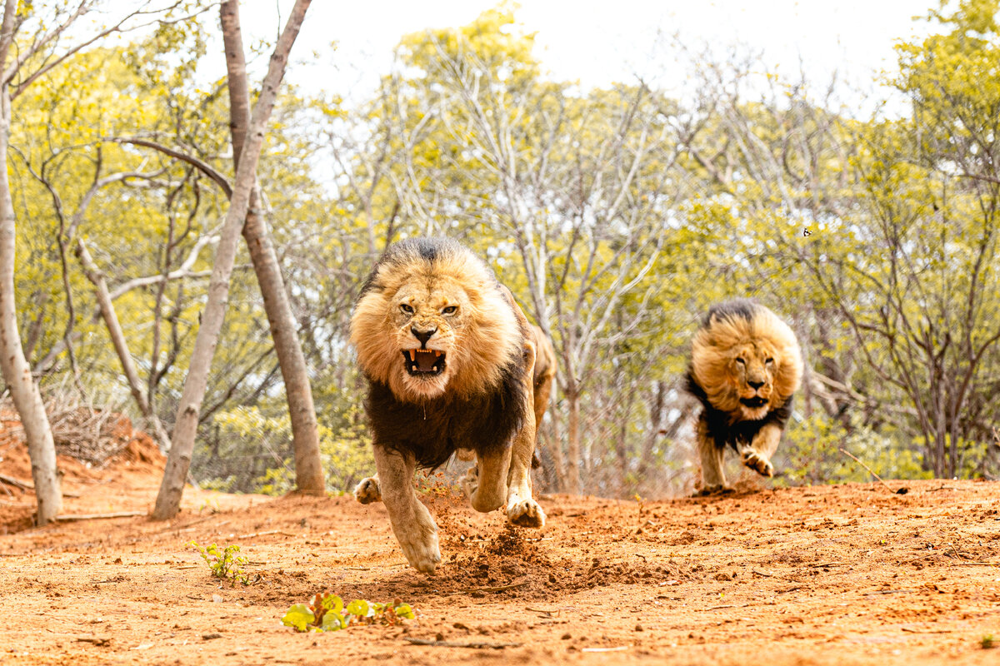
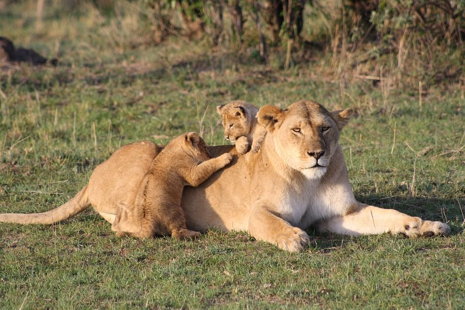
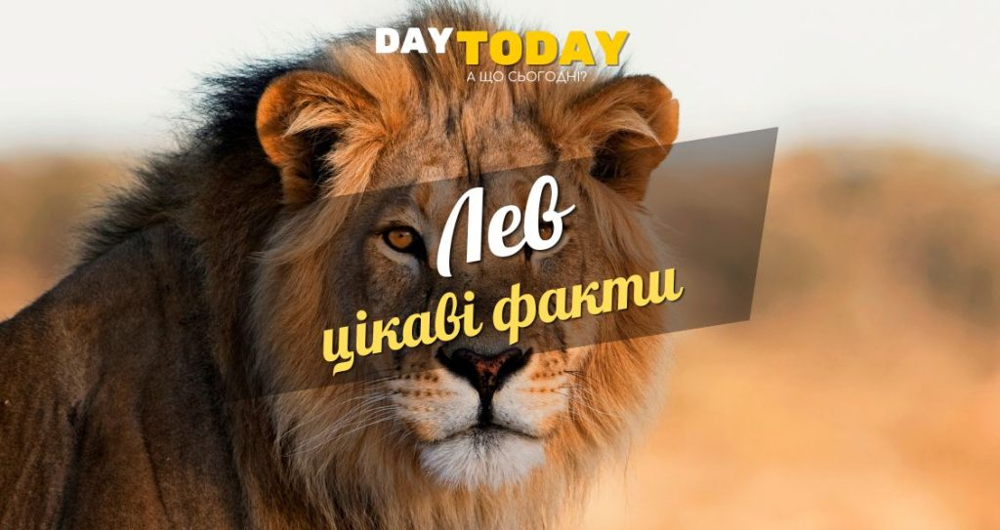

Фізичні характеристики
Самці і самки левів виглядають по-різному. Дорослі самці відрощують вражаючу гриву, яка слугує захистом і знаком домінування. Ці гриви виростають до 16 см завдовжки і є ознакою домінування. Однак не всі самці левів мають гриву. «Безгриві» самці левів поширені в деяких частинах Африки, наприклад, у Національному парку Цаво в Кенії. Вважається, що це адаптація до місцевого клімату, оскільки грива зменшує втрату тепла
На розвиток гриви впливає гормон тестостерон, і леви, які перебувають у неволі і були кастровані, зазвичай втрачають гриву або вона зовсім не росте
У середньому самці левів важать 190 кг, а самки – 126 кг. Така вага і сила потрібні їм, щоб полювати на велику здобич і захищати свій прайд
Лев може бігати на короткі відстані зі швидкістю 80 км/год і стрибати на відстань до 11 метрів
Лев має надзвичайно гострі кігті, які можуть виростати до 38 см, а його паща може роззявлятися до 28 см
Середовище існування та поширення
Хоча лева іноді називають “королем джунглів”, насправді він живе лише на луках і рівнинах
Колись лев водився по всій Африці, Азії та Європі, але зараз існує лише в Африці, за одним винятком. Останні азійські леви, що залишилися, мешкають у національному парку Сасан-Гір в Індії
Левів не так багато, як ви думаєте. За підрахунками, в дикій природі залишилося лише близько 23 000 левів. Для порівняння, в Африці налічується близько 415 000 диких африканських слонів, що підкреслює, наскільки низькою є популяція левів. Дивовижно, але леви зникли з понад 90% свого історичного ареалу
Харчування та полювання

Хижацька дієта: леви можуть з’їсти 40 кг м’яса за один раз, полюючи на інших наземних ссавців, таких як зебри, антилопи і дикі свині
Стратегія полювання: самки левів є основними мисливцями прайду. Вони полюють групами, де слабші левиці виконують роль пастушок, а сильніші йдуть на здобич
Леви дуже адаптивні і можуть жити в надзвичайно посушливих місцях, таких як пустеля Калахарі. Тут вони отримують більшу частину води від своєї здобичі і навіть п’ють з рослин, таких як диня Цамма
Розмноження та виховання
Полігамна природа: у дикій природі леви розмножуються раз на два роки, а в неволі – щороку. І самці, і самки спаровуються з кількома партнерами
Левенята виховуються спільно. Самки левів та їхні левенята складають більшу частину прайду, і самки спільними зусиллями вигодовують своїх дитинчат
Левенята народжуються з плямами, які допомагають їм маскуватися у довгій траві. Ці плями зникають у міру дорослішання
Зазвичай левиця народжує близько 3 левенят, але може мати до 6. Левенят ховають від прайду, поки вони не зміцніють і не повернуться, зазвичай у віці 4-6 тижнів
Охорона і загрози існування

Вразливий статус: цим величним котам загрожує втрата середовищ існування, і вони занесені до Червоного списку видів, що перебувають під загрозою зникнення, Міжнародного союзу охорони природи
За останні три покоління чисельність африканських левів скоротилася більш ніж на 40%. Популяція левів неухильно скорочується вже понад три десятиліття
Люди незаконно добувають левові кістки як ліки, а трофейне полювання спрямоване на найздоровіших і найбільших самців, що становить значну загрозу їхньому виживанню
Соціальна поведінка і спосіб життя
Леви живуть сімейними групами, які називаються прайдами, що складаються з одного або кількох левів-самців, кількох споріднених самок та їхніх левенят. Самки вигодовують левенят і полюють, тоді як самці захищають прайд від хижаків і самців-суперників
Африканські леви є найбільш соціальними з усіх великих котів і живуть разом у групах або “прайдах”. До прайду входить близько 15 левів
Ролі в прайді: Самці левів захищають територію прайду, в той час як самки виконують більшу частину полювання. Незважаючи на це, самці їдять першими
Леви відомі як найлінивіші з усіх великих котів, проводячи від 21 до 22 годин на добу уві сні, відпочинку та простому сидінні
Рев лева можна почути на відстані до 8 км. Усі леви у прайді зазвичай ревуть разом, щоб позначити свою територію
Левенята починають приєднуватися до цього рику у віці 2-3 місяців
Леви полюють переважно вночі, використовуючи свій гострий зір, який добре пристосований до умов низької освітленості, що дає їм значну перевагу над здобиччю. Цікаво, що леви також полюють під час штормів. Шум, дощ і вітер під час шторму заважають здобичі бачити і чути левів, тим самим збільшуючи ймовірність успішного полювання
Під час полювання левиці часто беруть на себе певні ролі. Одні діють як «центр», інші – як «крило». Левиці на крилах переслідують здобич у напрямку до центральних левиць, координуючи свої зусилля, щоб ефективно вистежити і схопити здобич
Самки левів зазвичай живуть довше, ніж самці. У дикій природі леви зазвичай живуть 10-14 років, але можуть доживати і до 20 років